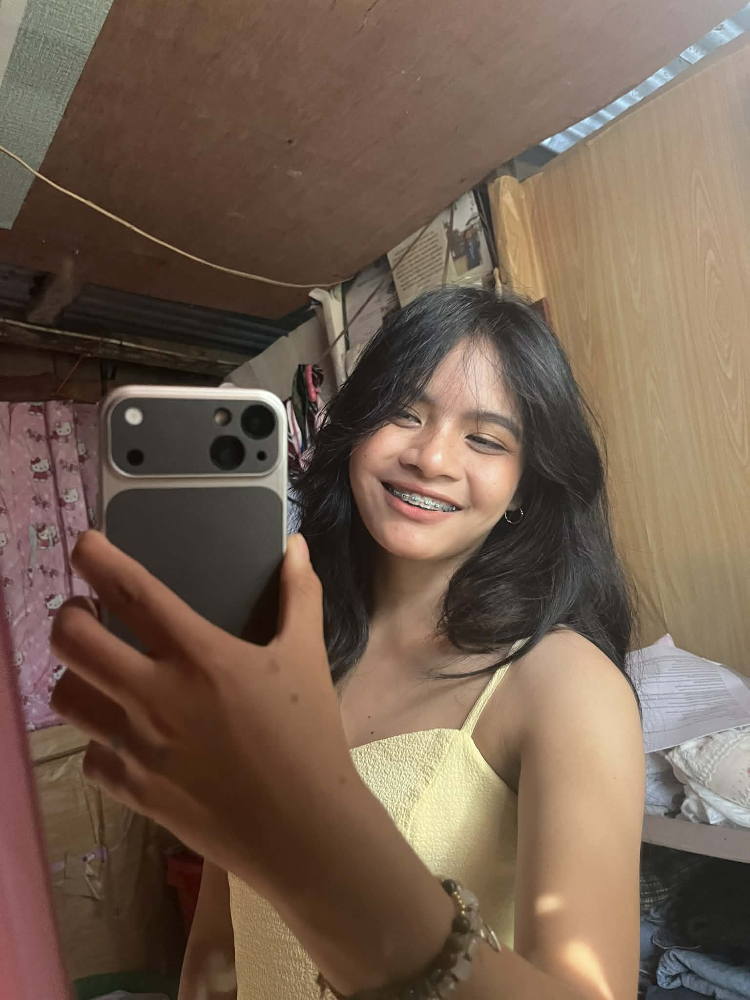

01
Basic Concepts of Ethics
Moral and non-moral standards, moral dilemmas, three levels of dilemmas, and why humans can be ethical.

Click each topic to open its lesson summary and personal reflection.
Moral and non-moral standards, moral dilemmas, three levels of dilemmas, and why humans can be ethical.
Freedom and responsibility, reason, impartiality, and feelings versus reason in moral decisions.
Culture, cultural relativism, respecting cultural differences, and ethical evaluation.
Filipino values, weaknesses of moral identity, Kohlberg's stages, and conscience-based decisions.